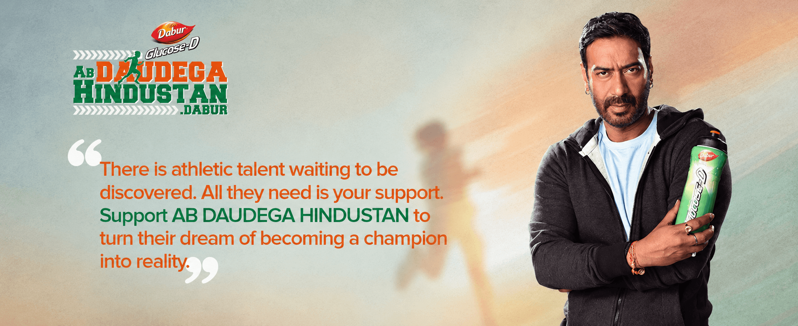
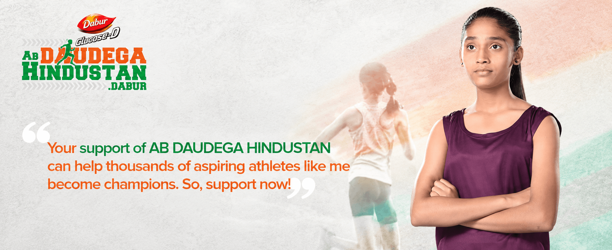
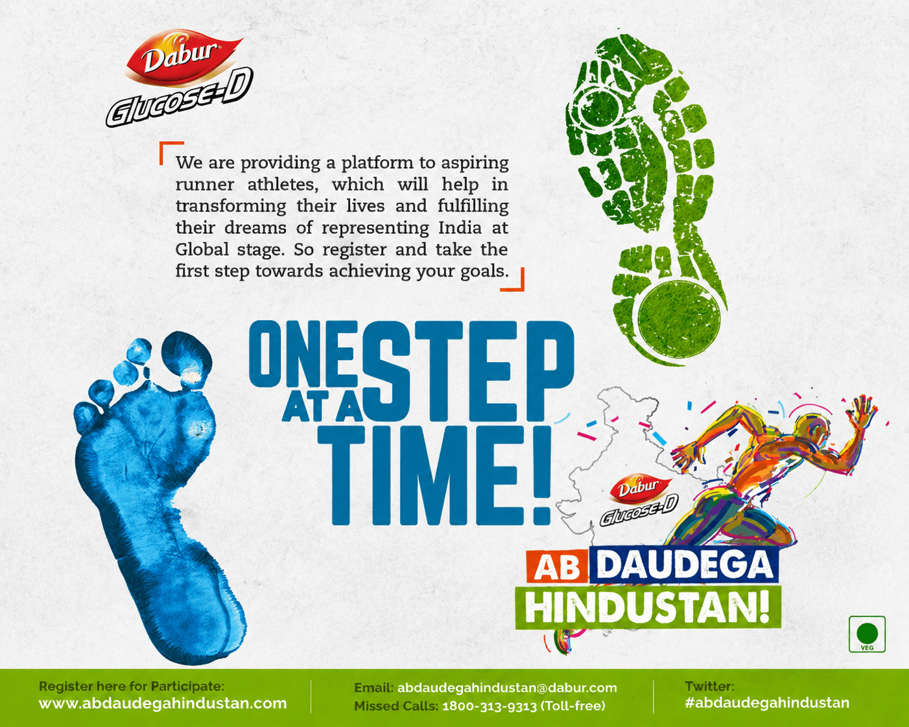
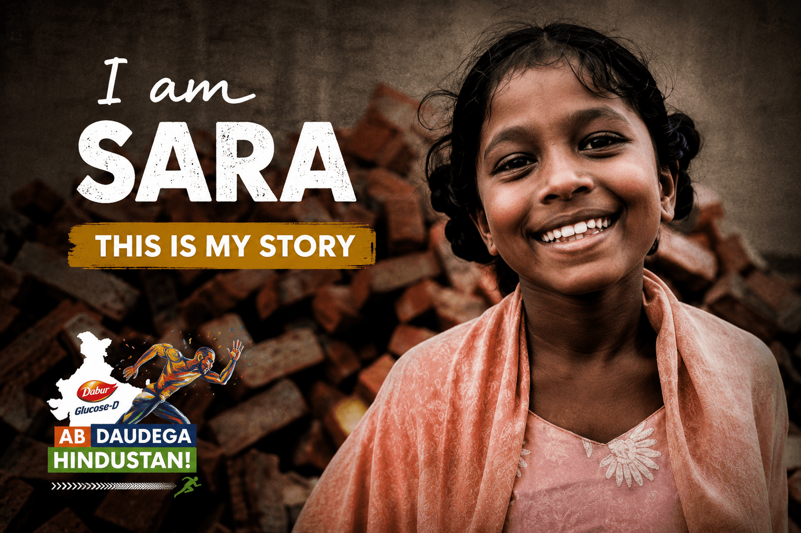
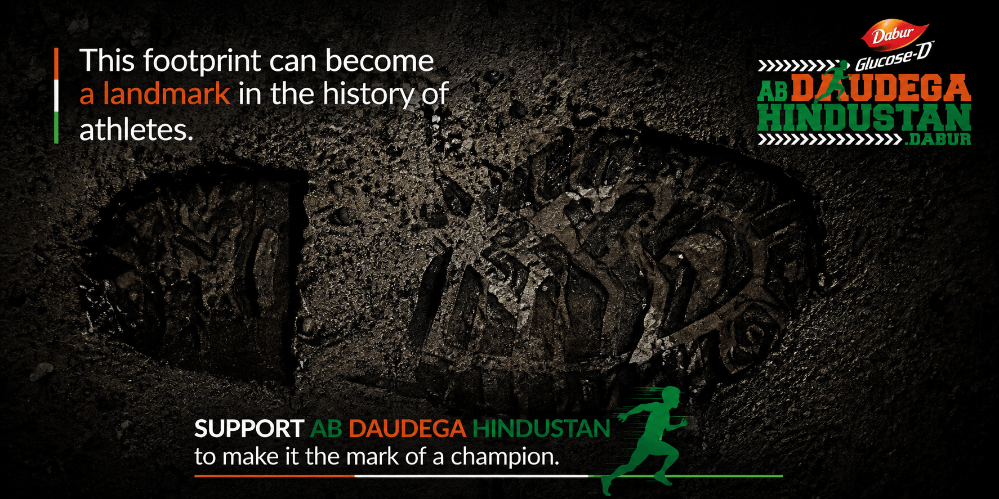
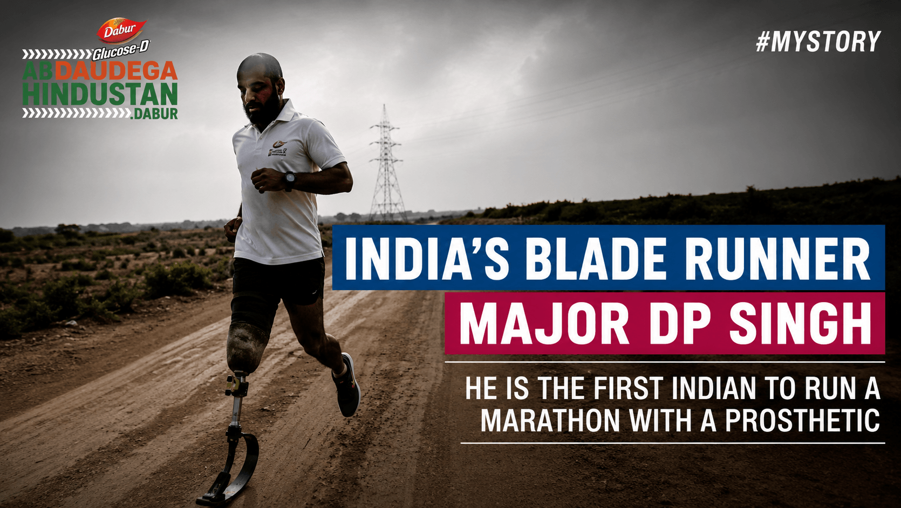

← Back to workAb Daudega
Dabur Glucose-D · Purpose-led Campaign
Ab Daudega
Hindustan.

Project overview
Talent exists everywhere.
Opportunity does not.
A national platform created to discover young runners beyond the usual sporting centres.
Dabur Glucose-D turned its natural association with energy into meaningful action: reach aspiring athletes at the grassroots, identify potential and create a path towards professional training.
- Reach
- Nationwide
- Focus
- Grassroots sport
- Platform
- Talent hunt
- Expression
- Film + activation
The challenge
Make hidden potential
impossible to overlook.
Young athletes can have the will and ability to compete, yet remain unseen because training, equipment and access are out of reach.
The campaign needed to move beyond endorsement and show how a mass energy brand could enable real sporting progress.

The campaign film
A call to run.
A reason to believe.
The strategy
Turn inspiration
into infrastructure.
The creative promise and the on-ground programme had to work as one system.
Stories created attention. Registrations found talent. Camps and expert assessment converted belief into a credible opportunity.
- 01
Discover
Reach schools, colleges and sports institutes across multiple states.
- 02
Shortlist
Use an independent panel and national camp to identify potential.
- 03
Develop
Give selected athletes access to expert professional coaching.

The campaign system
One footprint.
Many paths forward.
A flexible identity moved from national appeal and athlete stories to registration communication, social content and on-ground visibility.



The impact
From a campaign line
to a real starting line.
The initiative connected mass communication to measurable participation and professional support.
Grassroots reach
Activations reached promising athletes across Bihar, Uttar Pradesh, Andhra Pradesh, Odisha and West Bengal.
Credible selection
An expert panel led by former Indian athletics champion Ashwini Nachappa evaluated the national camp.
Lasting opportunity
Seven athletes earned professional coaching designed to help them progress in competitive sport.
Potential found.Momentum created.
Have a platform worth building?